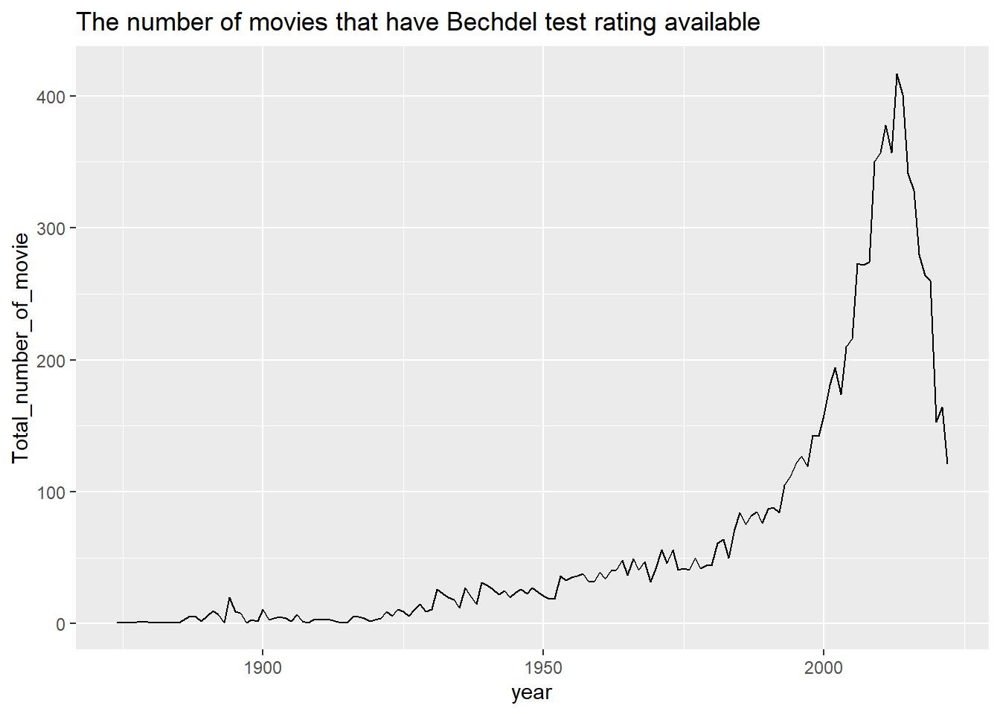

library(tidyverse)
library(ggplot2)
library(rjson)
library(jsonlite)
library(summarytools)
library(ggridges)
library(grid)
knitr::opts_chunk$set(echo = TRUE, warning=FALSE, message=FALSE)Challenge 6 Instructions
challenge_6
bechdel_test
movies
Female_Representation
Erika_Nagai
Visualizing Time and Relationships
Challenge Overview
Today’s challenge is to:
- read in a data set, and describe the data set using both words and any supporting information (e.g., tables, etc)
- tidy data (as needed, including sanity checks)
- mutate variables as needed (including sanity checks)
- create at least one graph including time (evolution)
- try to make them “publication” ready (optional)
- Explain why you choose the specific graph type
- Create at least one graph depicting part-whole or flow relationships
- try to make them “publication” ready (optional)
- Explain why you choose the specific graph type
This week, I chosed to analyze data about female representation in movies, specifically focusing on Bechdel test. According to “Merriam-Webster”, Bechdel test is “a set of criteria used as a test to evaluate a work of fiction (such as a film) on the basis of its inclusion and representation of female characters” (https://www.merriam-webster.com/dictionary/Bechdel%20Test)
It usually includes 1) At least two women are featured 2) These women talk to each other 3) They discuss something other than a man
I used two datasets.
imdb_df: The reviews information taken from IMDb (Internet Movie Database) https://www.imdb.com/interfaces/bechdel_df: https://bechdeltest.com/api/v1/doc
Read in data
bechdel_df
This data is extracted from bechdeltest API, so I used jsonlite’s read_json function. The values in imdbid are missing “tt” in the beginning and don’t match with the original imdb id so I made a new column new_imdbidthat concatnate “tt” and the value of imdbid
# json_file <- "http://bechdeltest.com/api/v1/getAllMovies"
# bechdel_df <- read_json(path = json_file, simplifyVector = TRUE)
# bechdel_df$titleId <- paste("tt",bechdel_df$imdbid, sep = "")
#
#
# head(bechdel_df)imdb_rating
I downloaded the tsv file compressed in a gz file from this website. https://www.imdb.com/interfaces/ First, I decompressed the gz file by R.usills::gunzip function, and then read in the tsv file.
I do NOT read in the original tsv file in this R Quarto because it is huge and it may cause issues. However, if you want to see what I did to read in the tsv file, you can refer to the below coding.
# I ran the below code to read in a huge gz file. I didn't include this in this quarto file because it doesn't allow me to submit a huge data file and it will cause errors.
# R.utils::gunzip("title.ratings.tsv.gz")
# imdb_rating <- read.delim(file = "title.ratings.tsv", sep = "\t")
#
# write.csv(imdb_rating, "imdb_rating.csv")
#imdb_rating <- read_csv()
# colnames(imdb_rating)[1] <- "titleId"
# imdb_ratingThen I joined bechdel_df and imdb_rating using titleId and named the new dataset as bechdel_imdb Again, you can see the below code to see how I joined two datasets.
# bechdel_imdb <- left_join(bechdel_df, imdb_rating, by="titleId" )
#
# write.csv(bechdel_imdb, "~/DACSS/601/601_Fall_2022/posts/_data/bechdel_imdb.csv")
bechdel_imdb <- read_csv("~/DACSS/601/601_Fall_2022/posts/_data/bechdel_imdb.csv")
bechdel_imdb# A tibble: 9,802 × 9
...1 title rating year id imdbid titleId avera…¹ numVo…²
<dbl> <chr> <dbl> <dbl> <dbl> <chr> <chr> <dbl> <dbl>
1 1 inazuma eleven: the … 3 1010 10556 17947… tt1794… 6.8 284
2 2 Passage de Venus 0 1874 9602 31557… tt3155… 6.9 1729
3 3 La Rosace Magique 0 1877 9804 14495… tt1449… 6 150
4 4 Sallie Gardner at a … 0 1878 9603 22214… tt2221… 7.4 3101
5 5 Le singe musicien 0 1878 9806 12592… tt1259… 6.2 258
6 6 Athlete Swinging a P… 0 1881 9816 78164… tt7816… 5.2 466
7 7 Buffalo Running 0 1883 9831 54597… tt5459… 6.3 1029
8 8 L'homme machine 0 1885 9832 85883… tt8588… 5.3 398
9 9 Man Walking Around t… 0 1887 9614 20752… tt2075… 5.2 1411
10 10 Cockatoo Flying 0 1887 9836 81331… tt8133… 5.3 207
# … with 9,792 more rows, and abbreviated variable names ¹averageRating,
# ²numVotesDescribe the dataset
As mentioned, bechdel_imdb dataset is made of two different data, (1) Reviews on movies from IMDb (2) Rating of Bechdel test of movies. This data set contains 9802 rows and 8 columns. Each row represents a movie and the below information about each movie is contained:
- year: a year when movie was released
- id: Bechdeltest.com unique id
- rating: Bechdel test rating (0 means no two women, 1 = no talking between women, 2 = talking about a man, 3 means it passes the test)
- title: Title of movies
- imdbid: IMDb unique id
- titleId: IMDb unique id with “tt” in the beginning (this column was used as foreign key when joining the datasets)
- average rating: weighted average of all the individual user ratings from IMDb
- numVotes: number of votes the title has received
print(summarytools::dfSummary(bechdel_imdb),
varnumbers = FALSE,
plain.ascii = FALSE,
style = "grid",
graph.magnif = 0.80,
valid.col = FALSE,
method = 'render',
table.classes = 'table-condensed')Data Frame Summary
bechdel_imdb
Dimensions: 9802 x 9Duplicates: 0
| Variable | Stats / Values | Freqs (% of Valid) | Graph | Missing | |||||||||||||||||||||||||||||||||||||||||||||||||||||||
|---|---|---|---|---|---|---|---|---|---|---|---|---|---|---|---|---|---|---|---|---|---|---|---|---|---|---|---|---|---|---|---|---|---|---|---|---|---|---|---|---|---|---|---|---|---|---|---|---|---|---|---|---|---|---|---|---|---|---|---|
| ...1 [numeric] |
|
9802 distinct values |  |
0 (0.0%) | |||||||||||||||||||||||||||||||||||||||||||||||||||||||
| title [character] |
|
|
 |
0 (0.0%) | |||||||||||||||||||||||||||||||||||||||||||||||||||||||
| rating [numeric] |
|
|
 |
0 (0.0%) | |||||||||||||||||||||||||||||||||||||||||||||||||||||||
| year [numeric] |
|
142 distinct values |  |
0 (0.0%) | |||||||||||||||||||||||||||||||||||||||||||||||||||||||
| id [numeric] |
|
9802 distinct values |  |
0 (0.0%) | |||||||||||||||||||||||||||||||||||||||||||||||||||||||
| imdbid [character] |
|
|
 |
3 (0.0%) | |||||||||||||||||||||||||||||||||||||||||||||||||||||||
| titleId [character] |
|
|
|
0 (0.0%) | |||||||||||||||||||||||||||||||||||||||||||||||||||||||
| averageRating [numeric] |
|
81 distinct values |  |
47 (0.5%) | |||||||||||||||||||||||||||||||||||||||||||||||||||||||
| numVotes [numeric] |
|
8833 distinct values |  |
47 (0.5%) |
Generated by summarytools 1.0.1 (R version 4.2.1)
2022-12-22
Tidy data
There are three different id columns “id”, “imdbid”, and “titleId”. Only one ID column will be enough so I decided to delete “id” and “imdbid”.
Also the column “…1” is not necessary because this colums only shows the row number, thus I removed the column “…1” as well.
bechdel_imdb <- bechdel_imdb %>% select(-c(id, imdbid, ...1))
colnames(bechdel_imdb)[1] "title" "rating" "year" "titleId"
[5] "averageRating" "numVotes" Also I changed the name of columns to make them easier to understand.
colnames(bechdel_imdb) <- c("title", "rating", "year", "titleId", "averageRating", "numVotes")
bechdel_imdb# A tibble: 9,802 × 6
title rating year titleId averageRating numVotes
<chr> <dbl> <dbl> <chr> <dbl> <dbl>
1 inazuma eleven: the movie 3 1010 tt1794796 6.8 284
2 Passage de Venus 0 1874 tt3155794 6.9 1729
3 La Rosace Magique 0 1877 tt14495706 6 150
4 Sallie Gardner at a Gallop 0 1878 tt2221420 7.4 3101
5 Le singe musicien 0 1878 tt12592084 6.2 258
6 Athlete Swinging a Pick 0 1881 tt7816420 5.2 466
7 Buffalo Running 0 1883 tt5459794 6.3 1029
8 L'homme machine 0 1885 tt8588366 5.3 398
9 Man Walking Around the Corner 0 1887 tt2075247 5.2 1411
10 Cockatoo Flying 0 1887 tt8133192 5.3 207
# … with 9,792 more rowsI realized that the released year of “inazuma eleven: the movie” is 1010, which doesn’t seem correct. According to the information on the internet, this movie was released in 2010, so I manually corrected this information.
bechdel_imdb$year[bechdel_imdb$year==1010] <- 2010After cleaning the data, the data contains the following information: * year: a year when movie was released * id: Bechdeltest.com unique id * rating: Bechdel test rating (0 means no two women, 1 = no talking between women, 2 = talking about a man, 3 means it passes the test) * title: Title of movies * imdbid: IMDb unique id * titleId: IMDb unique id with “tt” in the beginning (this column was added to join two datasets)Ha * average rating: weighted average of all the individual user ratings from IMDb * numVotes: number of votes the title has received
Visualization
Before analyzing the data, please note that not all movies have the Bechdel test available on http://bechdeltest.com. I’m able to analyze only the movies that have the Bechdel test rating available and the number of these movies is as follows.
vis <- bechdel_imdb %>%
group_by(year) %>%
summarize(
Total_number_of_movie = n()
)
ggplot(vis, aes(x=year, y=Total_number_of_movie)) +
geom_line() +
labs(title = "The number of movies that have Bechdel test rating available")
1: Has female representation in movies improved over time?
It seems like the number of movies that pass the Bechdel test is increasing however we cannot see if it’s true because the total number of movies is also increasing.
bechdel_imdb$rating <- as.factor(bechdel_imdb$rating)
vis1 <- bechdel_imdb %>% group_by(year, rating) %>%
dplyr::summarize(count = n())ggplot(vis1, aes(x = year, y = count, fill = rating))+
geom_area()+
labs(title="Number of movies by Bechdel test rating", y = "Number of movies", x = "Year") +
scale_fill_discrete(name = "Bechdel Test Rating", labels = c("0: No two women", "1: No women talking each other", "2: Talking about a man", "3: Passes the test"))
I created the graph of proportion of Bechdel Rating instead of number. This graph shows that the % of movies that pass the Bechdel test is constantly increasing since around 1970. Currently, over 70% of the released movies passes the Bechdel test. Even though most movies feature more than one female, however around 25% of movies still do NOT show two females talking each other.
ggplot(vis1, aes(x = year, y = count, fill = rating))+
geom_area(position = "fill")+
labs(title="% of movies by Bechdel test rating", y = "Number of movies", x = "Year") +
scale_y_continuous(labels = scales::percent)+
scale_fill_discrete(name = "Bechdel Test Rating", labels = c("0: No two women", "1: No women talking each other", "2: Talking about a man", "3: Passes the test")) +
annotate("segment", x =1970, xend = 2000, y = 0.35, yend = 0.50, colour = "black", arrow = arrow())
Since there is only a small number of rated movies before 1950, the percentage graph does not appear smooth. I decided to focus on the movies released in 1950 or after.
ggplot(vis1 %>% filter(year >= 1950), aes(x = year, y = count, fill = rating))+
geom_area(position = "fill")+
labs(title="% of movies by Bechdel test rating", y = "Number of movies", x = "Year") +
scale_y_continuous(labels = scales::percent)+
scale_fill_discrete(name = "Bechdel Test Rating", labels = c("0: No two women", "1: No women talking each other", "2: Talking about a man", "3: Passes the test"))+
annotate("segment", x =1970, xend = 2000, y = 0.35, yend = 0.50, colour = "black", arrow = arrow())
2: Are movies in which women are represented more popular?
If people value female representation in movies, the movies that have a better rating of Bechdel test will score higher on the reviews. However, the below graph doesn’t show such trend clearly.
ggplot(bechdel_imdb %>% filter(year >= 1950), aes(x=year, y=averageRating)) +
geom_point(aes(colour=factor(rating))) +
xlab("Year") +
ylab("IBDm Review Score") +
scale_color_discrete(name = "Bechdel Test Rating", labels = c("0: No two women", "1: No women talking each other", "2: Talking about a man", "3: Passes the test"))
I created a facet graph to see the trend more clearly, however, it seems that the rating of Bechdel test doesn’t affect the review rating.
ggplot(bechdel_imdb %>% filter(year >= 1950), aes(x=year, y=averageRating)) +
geom_point() +
xlab("Year") +
labs(title = "IMDb review rating by bechdel test rating")+
ylab("IBDm Review Score") +
scale_color_discrete(name = "Bechdel Test Rating", labels = c("0: No two women", "1: No women talking each other", "2: Talking about a man", "3: Passes the test")) +
facet_wrap(vars(factor(rating)))
Violin plot or line of average
For further study, I would like to find out: 1) The trend of the number of proportion of the movies that pass Bechdel Test in different regions (Europe, Asia, Middle East, etc) 2) Whether or not a movie passes the Bechdel Test affects the movie’s success (audience and expert reviews, revenue)?